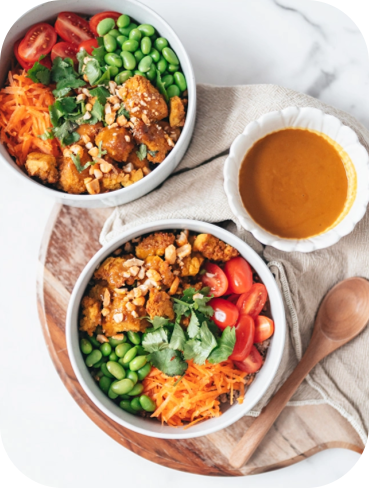

Featured Athlete Fuel

High-Protein Power Fuel
View Full Recipe
Protein-Packed Satay Buddha Bowl
A colorful powerhouse bowl loaded with marinated grilled satay tofu, crisp seasonal greens, edamame, and fluffy golden quinoa. Drizzled with an authentic peanut-lime recovery dressing.
Calories
490 kcal
Protein
22g
Carbs
58g
Healthy Fat
18g